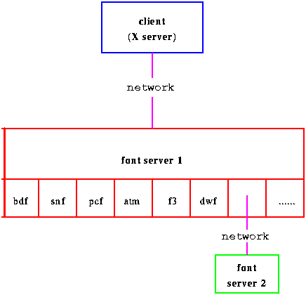

X Window System的一个基本的设计哲学是它的功能由一组部件合作完成，而不是一切工作集中在一个应用中完成(事实上，UNIX也是如此)。最好的例子便是window manager。
Window Manager实际上是一个特殊的X Client，它的任务是控制窗口的外观，并提供用户与窗口交互的途径。实际上，屏幕上显示的任何东西都是一个窗口，window manager就是管理它们的。
不同的Window manager为窗口提供了不同的外观和行为，而每个wm本身的外观和行为又是可以自定义的(即themes风格)。所有的桌面系统(desktop environment)都是基于wm的思路开发的。
Window manager也仅仅是一个X Client，所以没有wm，X系统完全可以运行，但你无法移动它，也无法改变它的大小。
常见的wm有：FVWM，FVWM95，TWM/VTWM，MWM，CTWM，OLWM/OLVWM，wm2/wmx，AfterStep，AmiWM，Enlightenment，WindowMaker，SCWM，IceWM，Sawfish，Blackbox，等等。
下面是关于Window Manager的简单比较：
| Window Manager |
Virtual Desktops |
Workspaces or Screens |
XPM Support |
Pinnable Menus |
Session Management |
|---|---|---|---|---|---|
| TWM | - | - | - | - | - |
| VTWM | - | - | - | - | |
| FVWM | - | ||||
| FVWM-95 | - | - | |||
| AfterStep | - | ||||
| CDE (dtwm) | - | - | |||
| AmiWM | - | - | - | - | |
| OLWM | - | - | - | - | |
| OLVWM | - | - | |||
| GWM | - | - | |||
| MWM1 | - | ||||
| CTWM | - | ||||
| Enlightenment | - | ||||
| WM2 | - | - | - | - | - |
| Window Maker | - | - | |||
| KDE | - | ||||
| ICEWM | - | - | - | ||
| SCWM |
在X11R4及以前版本，每个X Server都需要存储至少一套字型。X Server只能从自己的字库中取得字型。如图所示：

图1：X11R4及以前版本对字库的使用
X11R5增加了一项“字库服务器(font server)”功能，它的基本概念是将字库分布存储在网络上的机器上，每个X Server都可以通过网络取得所需要的字型。不必象X11R4及以前版本的X Window System，现在X Server可以没有自己的字库。如图所示：

图2：X font server支持下的字库使用
X font Server的结构非常灵活，一个X Server可以同时读取多处的字库，一个X font server也可以同时为多个X Server服务。如图所示：

图3：X font server灵活的体系结构
X font server还可以是层次体系的，即一个X Server可以透过一个font server访问其它的font server。如图所示：

图4：X font server的层次体系
使用font server的好处有很多，例如：
- 资源分布，具有容错性；
- 在一个网络上，一套字库只需存储一份；
- 字型的计算在XFS上完成，大大节省了X Server的计算能力，特别是防止了X Server在字型计算时被挂起。
作为一个网络图形协议和分布式视窗系统，X是第一个成功的分布式计算技术。但随着Internet的发展，分布式技术越来越倾向于Web。虽然X的设计目的是进入每个人的桌面，但由于对Internet应用的忽略，使得它一直停留在Workstation等UNIX主机的桌面。尽管基于PC的 Server也有大量的涌现，但X的本质是面向应用而非信息共享的，在个人机的桌面，浏览器逐渐称为不可否认的标准。为了使得X能够进入浏览器，而不仅仅是X Server，X Consortium引入了Broadway的概念，从而将X Window的技术扩展到了Internet和WWW。
Broadway技术：在对现有的UNIX/X应用不做任何修改的情况下，一个采用了Broadway技术的浏览器在相关X Server的配合下，可以在Internet和WWW上远程执行UNIX/X应用。UNIX/X应用可以嵌入WEB页面，以与任何WEB资源一样的方式被访问。
1995年，引入Broadway概念。 X11R6.3 codename "Broadway"。
Broadway是如何工作的
- Boadway Plugin: 负责Bowser与X Server的联系；
- X Server:负责与X Client的联系；
- Browser: X Windows Manager;

图5：Broadway的结构示意